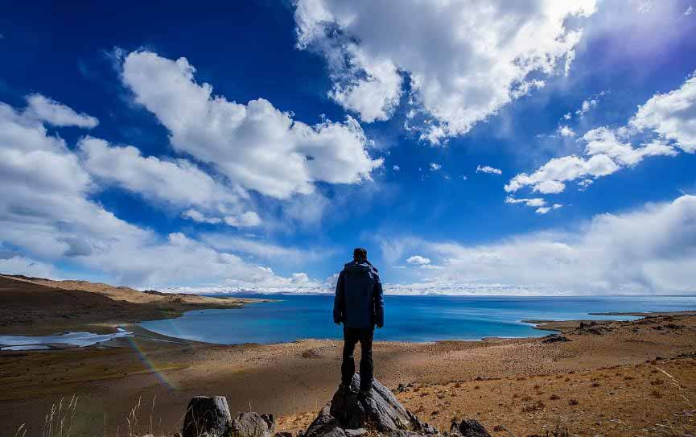

I have three hobbies .
playing badminton


listening to music


Jay Chou and Michael Jackson are my two favourite singers .
Jay Chou (born January 18, 1979) is a Taiwanese musician,singer, music and film producer, actor and
director who has won the World Music Award four times.
Although he was trained in classical music,Chou combines Chinese and Western music styles to
produce songs that fuse R&B, rock and pop genres,
covering issues such as domestic violence, war, and urbanization.
In 2000 Chou released his first album, titled Jay, under the record company Alpha Music.
Since then he has released one album per year except in 2009, selling several million copies each.
His music has gained recognition throughout Asia, most notably in regions such as Taiwan, China,
Hong Kong, Japan, Malaysia, Indonesia, India, Singapore, Thailand, Vietnam and in overseas Asian region,
winning more than 20 awards each year.
He has sold more than 28 million albums worldwide up to 2010.
To a great extent, Jay Chou has promoted the status of songwriters in the Chinese music industry,
and has become a newcomer who has the deepest influence on Chinese music in the past five years,
alongside famous Chinese musicians such as Wang Leehom and David Zee Tao.
Jay Chou combines Chinese and Western music, classical music and pop music.
He shuttles between music with unconstrained creation and unique singing style. Among them, R&B and
Chinese style have the deepest skills, and they incorporate elements such as opera and nationality.
In addition, he skillfully use various musical instruments to show gorgeous arranger effect,
and also create his diverse musical styles.
Michael Joseph Jackson is a symbol of pop culture figure, and he is a highly influential singer, composer, lyricist, dancer, record producer, philanthropist, humanitarian as well as the fashion leader.
He deeply influenced and promoted the development of popular music, and he known as the king of pop music.
With stage performances and music videos, Jackson popularized a number of physically complicated dance
techniques, such as the robot and the moonwalk.
His distinctive musical sound and vocal style influenced many hip hop, pop and contemporary R&B artists.
As one of the few artists to have been inducted into the Rock and Roll Hall of Fame twice,
his other achievements include multiple Guinness World Records-including one for "Most Successful
Entertainer of All Time"-13 Grammy Awards,
13 number one singles in his solo career-more than any other male artist in the Hot 100 era-and
the sales of over 750 million albums worldwide.
Cited as one of the world’s most famous men, Jackson’s highly publicized personal life,
coupled with his successful career, made him a part of popular culture for almost four decades.
He is a music history of the first outside the United States sold 100 million records on the
artists. Magic of dance as he is to emulate so many stars.
He is in support of the world's 39 rescue Charitable Foundation in 2006 to maintain a personal
charity of the Guinness Book of World Records.
And he is the world's personal contributions to charities on behalf of most people.
travelling
